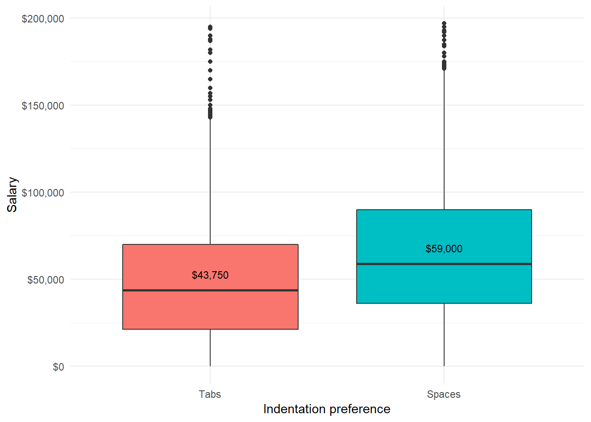
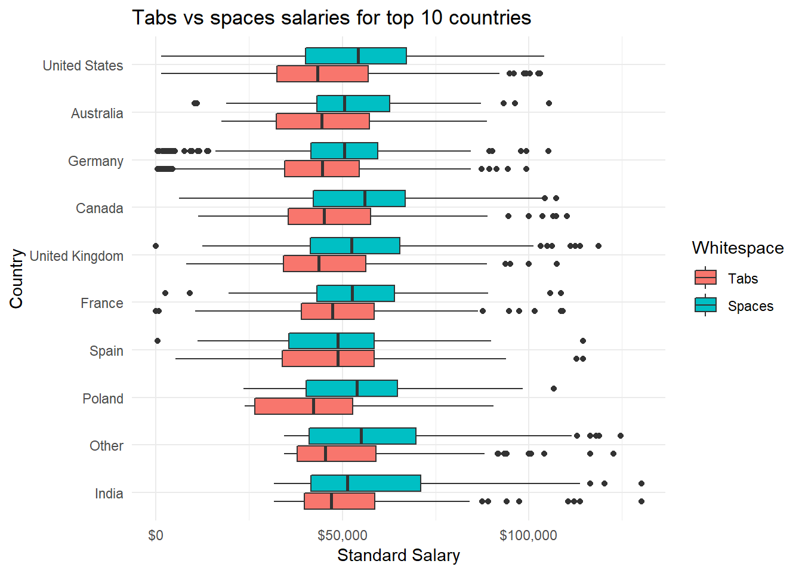
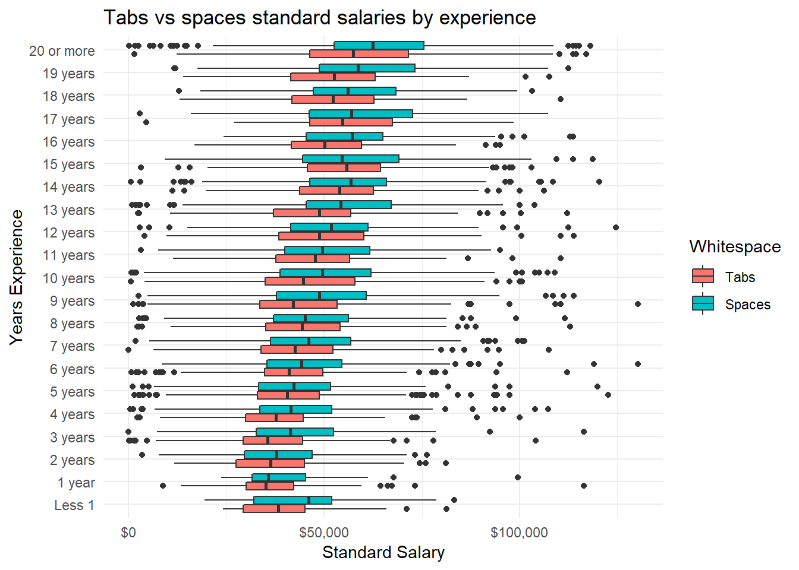
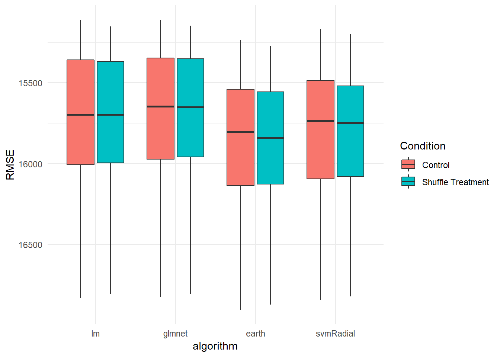
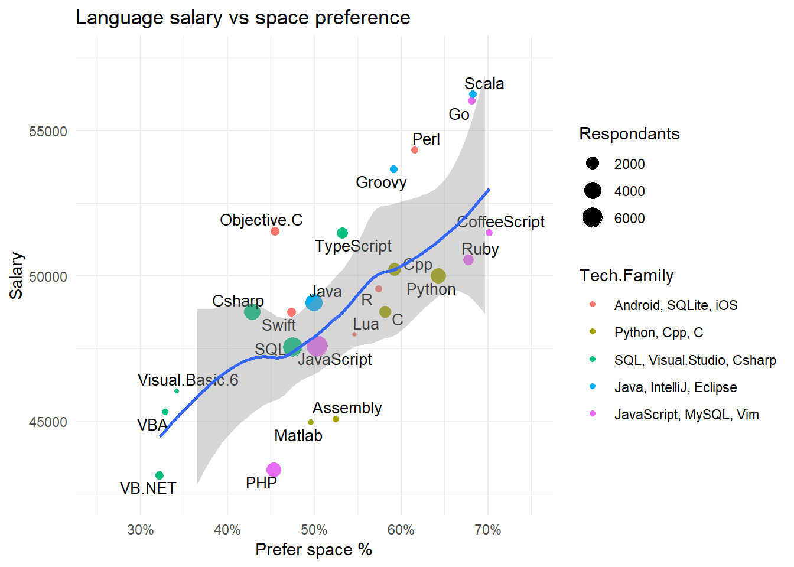
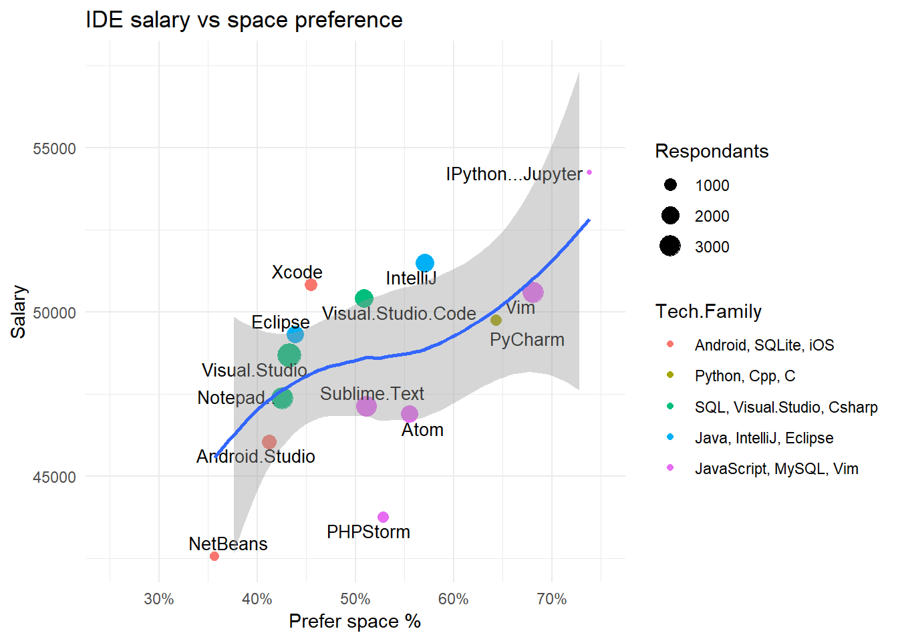
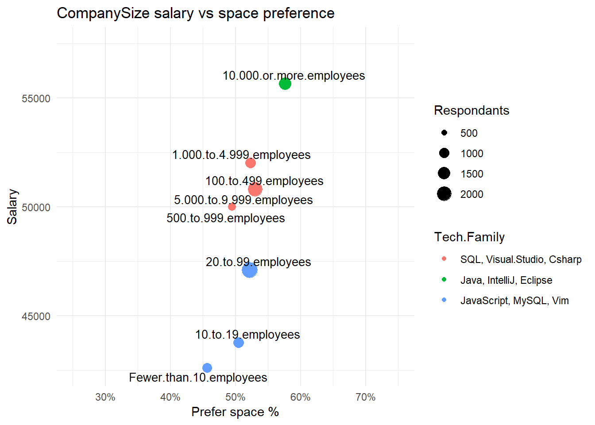
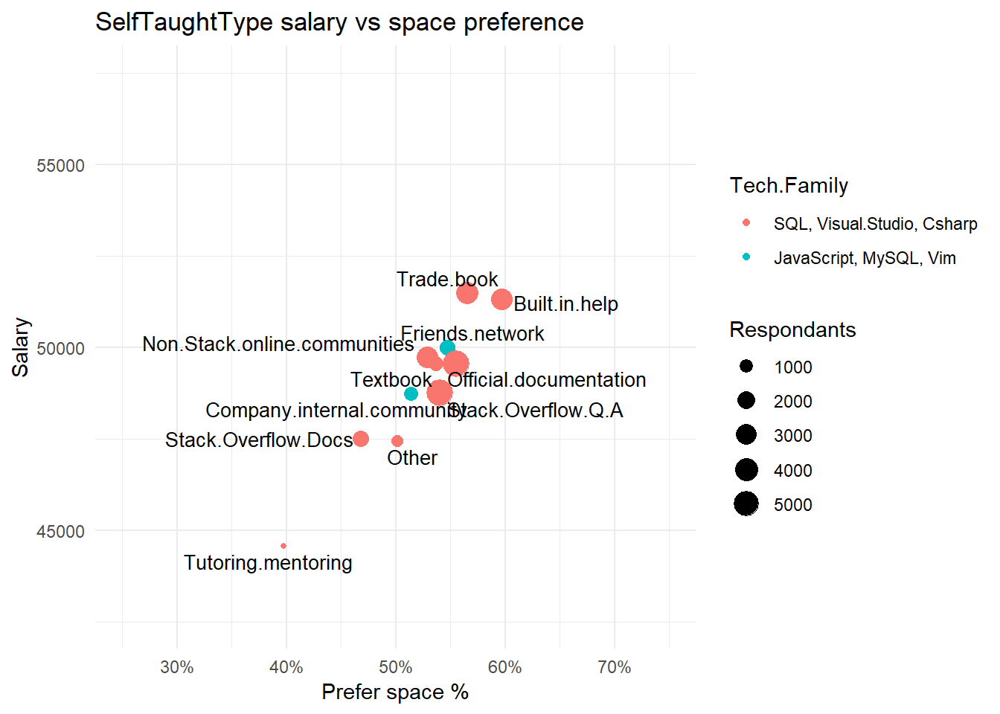

Some time last year I was starting out on the path of learning Predictive Modelling and I became intrigued by an analysis done on data from the 2017 StackOverflow survey. It appeated to show that developers that preferred to indent their code with spaces rather than tabs had a distinct salary advantage. The salary advantage was surprisingly persistence even when you attempted to account for variables like the country where the developer worked or how many years they had been working for.
Its a little bit old news now but currently I’m polishing up a lot of my self-training data analyses to form a portfolio of work I can present to prospective employers. However upon inspection of this analysis, while it had some good ideas, had some issues. So I decided to revisit it with lessons I’ve learnt upon the way and some of the techniques and technologies I’ve developed since.
So to start lets plot the salaries for all respondants divided into those who prefer to format their code with spaces versus those who prefer tabs.

As you can see their is a marked difference in the reported salaries.
An obvious question that often got raised when I worked on this problem was whether the country the respondant was working on had something to do with it. Maybe people in India had a marked preference and they were earning less?
This question was part of the reason I standardized salaries per country and the difference is still there. However the difference in salaries is remarkedly persistent across countries as the following plot shows.

To make the plot clearer I filtered this list to just the top 10 countries by number of respondants. But suffice it to say, space formatters making more money was consistent down the line.
Another obvious question is perhaps it had to do with how long a respondant had been working for. Maybe a space preference is “Old school” and people who have been working for longer definitly get paid more.
However if you plot the salary preference by years of experience you get the following.

Again you can see the space preference salary advantage is pretty consistent. You can slice and dice the data in a variety of ways but the salary advantage persists.
Its readily apparent that space formatters earn more money than tab formatters. However the interesting question is why?
What turned out to be an excellent data science exercise was to test the hypothesis “The formatting preference of developers effects their salary”.
Even if we are pretty certain that code formatting preferences have little effect on developers salaries, it was an excellent data science exercise to demonstrate that the hypothesis “Formatting preferences have a significant effect on salaries” was false.
To do this I performed the following machine learning experiment.
First I created a dataset containing answers to the following questions which seemed to cover a large territory of likely influences of a persons salary:
I then used a variety of algorithms to train a model that would predict the respondants salary. These are the “control” models.
I then random shuffled the code formatting preference question and trained the models again. These are the “Shuffle treatment” models.
The idea is that the random shuffling destroys any information that the whitespace question might be providing, while allowing us to fit the models in exactly the same way. If the whitespace preference is causing the salary difference then it should reduce the models predictive performance. And if it does not have a causal influence then both models should perform more or less the same.
To get a distribution of performances to compare each model is trained 30 different times with different random subsets of the training data.
The result of this modelling experiment is shown below:

The control fits possibly show a slightly better performance than the shuffled models. However the difference is not significant, $17 on average, nothing like the dramatic difference we are looking for. Consequently it seems reasonable to assume that formatting preference has little causal influence on salaries. The whitespace preference appears to be dependant on the other variables. Phew it looks like common-sense actually prevails.
The next question to answer is what is it dependant on.
Most of the questions listed above are actually one of a set of choices, with many being multiple choice.
For example the “Which programming languages are you experience in” question allows you to pick multiple choices from a long list of possible programming languages. VB, C, C#, Java, Python and so on.
We could get an idea of the effect of a particular programming language on whitespace preference by working out the ratio of Tabs versus Space for everyone who stated they worked with that language.
Likewise we could get an idea of the influence on salaries by working out the mean salary for everyone for everyone for everyone who worked with that language.
Then we could get an idea if there was any relationship between whitespace and programming languages in general by working out those value pairs for all programming languages and plotting them on scatter plot.

This plot shows that their is a quite distinct relationship between white space preference and salary when it comes to programming languages. The points have a distinct trend and I’ve added a smoothing curve to highlight it. The grey bar gives the 95% confidence interval of where the trend line should sit. The size of the circle shows the number of respondants who have used that language.
As an added bonus I used a clustering algorithm to find “associated” technologies. I’ve called this association “Tech families”. The name for each tech family is the top 3 answers associated with that tech family. Its pretty flacky but it seems to a bit of sense make sense.
That clustering makes it easy to see some trends. A noteable one is that the “classic” Microsoft languages are associated with a low space preference and low salaries. The niche web-development languages seem to pay better and foster space formatting. There is quite a wide range of space preference probabilities with 70% of the old VB hackers using tabs and 70% of the young web-devs using spaces.
Lets repeat the scatter plot for the IDE’s that a developer has used.

The distinct trend is still there. However the 95% confidence interval is now wider indicating its not so sure.
The dev’s who’ve used the big mainstream IDE’s Visual Studio and Eclipse like tabs.
The dev’s who have used the IDE’s based on Atom tend to sit more in the middle.
Missing from this graph are developers who have used Emacs which sit beyond the top-right corner. They and the guys who have used Vim are really into formatting their code using spaces. Both Emacs and Vim aren’t GUI IDE’s. They both hail from text-terminal days and are still used when editing files using text shells.
And again the tech families are tending to appear in the same place on the plot. This is not surprising because many of the programming languaged would be editted with there associated IDE’s.
It might be that trend seen in the languages is actually a trend that follows from the text editing tools used to edit those languages. Its might be apparent in the language question because the ecosystem of programming languages is far more diverse and highlights the trend better.
So far we’ve looked at the tech related questions seen most of the big contributors to the Tabs versus space renumeration differential. To show a variation I’ve included the “How big is the company you work for question”.

It shows quite a different pattern. There is a pretty strong relationship between the size of the company and how much the employees get paid. But it has very little bearing on the whitespace preference.
This plot demonstrates that its the tools that dev’s use really seem to matter.
Its different again with the self taught type question.

This time it makes little difference to either renumeration or whitespace preference.
So whats the story behind this Tabs versus Spaces versus Salary puzzle.
The story that makes sense to me is that its related to the development tools that developers use.
That the IDE’s where divided into quite distinct groups was quite compelling. People still working with VBA having a space preference of 30%, the big Microsoft, Java and Apple IDE’s all sitting with about a 40% space preference, the Atom based IDE’s sitting at around 50% space preference and the old text-terminal IDE’s sitting at around 70-80% space preference.
After all it makes sense that the tools being used to edit text promote certain text editing styles. And with only 4 major niches its quite easy for them to get arranged into that trend with salary by chance.
I’ve looked at the other questions but it gets increasingly harder to pick out any trend. But the questions that you expect to have little relation to the toolsets like education level or race have little relationship to formatting preference.
If anyones interested or has an idea leave a comment. But currently I’m not planning on anymore posts on this topic! I’ve spent way too much time on it already.